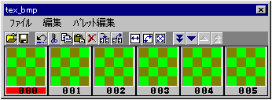
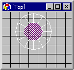
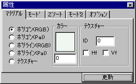
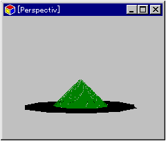

★Graphic Tools Guide
★3DMEユーザーズマニュアル
★Graphic Tools Guide
★3DMEユーザーズマニュアル
▲
戻る｜
進む▼
汎用３Ｄモデリングツールユーザーズマニュアル/3.サンプル作成
■テクスチャーを貼る
- 1) テクスチャーリストを開く
- 「ウインドウ」→「テクスチャーリスト」を選択し、テクスチャーリストウインドウを開いてください。
【テクスチャーウインドウ】

- 2) テクスチャーを読み込む
- テクスチャーリストウインドウの「000」のウインドウ上でマウスの右ボタンをクリックしてください。「テクスチャーの設定」というウインドウが開きます。
そのウインドウで読み込みたいテクスチャーの設定(色数、バンクなど)を決めた後、「ファイルロード」のボタンをクリックします。するとファイルビューワーのウインドウが開きますので、任意のBMP形式のファイルを指定してください。
読み込むサイズは256x256ドットが上限です。BMPの色数は16色,256色,32000色,1600万色(32000色に減色)が使用できます。枚数は1000枚まで登録できます。
ここではサンプルデータのKUSA.BMPを読み込んでみます。
- 3) テクスチャーデータをセーブする
- テクスチャーデータをまとめてセーブします。テクスチャーリストウインドウの「ファイル」→「保存」を選んでください。
セーブする形式は以下の種類があります。
| 形 式 | 性 質 |
|---|
| *.STT | 3dme.EXE用 |
| *.TXR | SGLプログラム組み込み用(テキストデータ) |
| *.BIN | SGLプログラム組み込み用(バイナリデータ) |
| *.HED | テクスチャーデータ転送用ヘッダ |
- 補 足１
- SGLに組み込む場合、TXRまたはBINおよびHEDファイルが必要となります(詳細はサンプルを参照してください)。
- 補 足２
- モデルデータを再度ロードする場合、テクスチャーデータも必要となりますので、モデルデータと併せてロードしてください。
- 4) テクスチャーデータをモデルに貼る
- モデルを表示しているウインドウをTop視点に切り替えてください。その後、ポリゴンモードにおいて円錐の盛り上がっている中心部分を選択します(下図参照)。
【円錐部の選択】

- 「ウインドウ」→「アトリビュート」を選択します。すると「属性」ウインドウが開きます。このウインドウで選択したポリゴンの各種設定が行えます。
【属性ウインドウ】

- テクスチャーを設定する場合、「マテリアル」項目の「テクスチャー」のチェックボックスをチェックします。そして「テクスチャーID」に「0」を指定します。「更新」のボタンをクリックすると内容がモデルに反映されます。TexCheckやPerspective視点にしてテクスチャーが貼られているか確認してください。
このウインドウでは他にもポリゴンに対して設定が行えます。どんな結果になるかいろいろ試してみてください。
【テクスチャーマッピングの例】

- 黒い部分は「マテリアル」項目において「ポリゴン(Pal)」の「カラー0」を指定しています。これによりプログラム上では透明色になります。
▲
戻る｜
進む▼
★Graphic Tools Guide
★3DMEユーザーズマニュアル
Copyright SEGA ENTERPRISES, LTD,. 1997